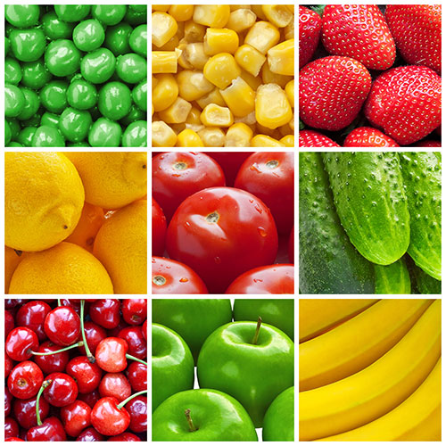
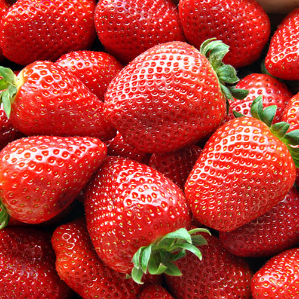

DISFRUTA
Tu mejor opción
Bienvenidos a disFruta
donde podrás encontrar productos frescos y con calidad certificada
EL MEJOR MOMENTO PARA COMER FRUTA

Hay muchas teorías sobre cuándo es el mejor momento para comer fruta, si antes de la comida, después de la comida o entre medias.
Además, hay teorías que afirman que no es bueno comer fruta después de cenar. ¿Qué hay de cierto en todo esto? No hay un mejor
momento para comer fruta, mejor dicho, no hay un mal momento para disfrutar de ella.
3 DE CADA 4 ESPAÑOLES CONSUMEN FRUTA A DIARIO

El consumo de fruta y verdura diario está asociado directamente a la dieta mediterránea y a la salud. La Organización
Mundial de la Salud recomienda el consumo mínimo de 5 porciones de fruta y verdura al día, por lo que cada español
debería consumir alguna fruta al día, para conseguir lograr este equilibrio. Recientes estudios sitúan a España como el
tercer país de la Unión Europea con mayor consumo diario de fruta, donde un 77% afirman consumir al menos una
pieza de fruta cada día.
DIFERENCIAS ENTRE FRESAS Y FRESONES

Antes de comprar fresas o fresones online, deberías conocer la diferencia entre las fresas y los fresones, dos frutas muy
parecidas pero con diferencias visuales, pero especialmente de sabor. ¿Conoces las diferencias entre fresas y fresones?
Las fresas y fresones son unas frutas de temporada, que se suelen consumir desde mediados de invierno hasta finales
de la primavera, dando un colorido especial a tu frutero.